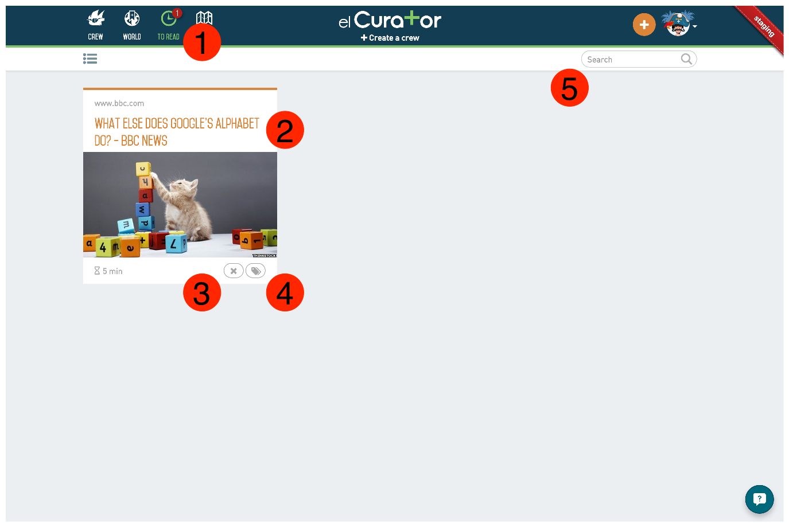
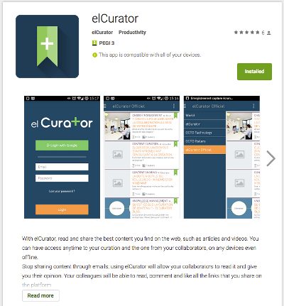

Just like software, this document will rot unless we take care of it. We encourage you to help us on that by giving us your feedbacks.
If you are reading this, you probably just arrived in the elCurator's developers team. First of all, welcome, and congratulation.
Because we are aware there is a lot of informations to absorb during your first days, we try to keep this document up to date in order to give you a point of reference concerning our team, our product and our methodologies. You also will get a good idea of what we think a good developer is.
This document is obviously targeting the developers, but we put all our efforts to make it understandable by everybody. If you are curious about what we are doing at elCurator, and even if you are not a developer, this document should still be interesting, and we hope it will statisfy your curiosity.
It is actually quite complex to explain what is our working environment. What is OCTO Technology and is it related to us? Are we an independant company or not? Who is investing in us? We will try to clarify these points in this chapter.
First of all, we should explain what is exactly OCTO Technology. You can find all the informations you need about this company on its website. Even though, we define OCTO Technology as an IT consulting, design and implementation company. Founded in 1998, OCTO is now employing 230 people in 5 coutries: France, Brazil, Switzerland, Morocco and Autralia. The OCTO community is mainly made up of IT consultants, and the main activity of OCTO is to guide and help realize its clients' projects.
There is a way of doing things at OCTO which pushes its employees to think about innovative concepts and develop them from inside the company. That's how two products were born in the company:
ElCurator is a product which was initiated by two consultants of OCTO Technology in 2012 during a particular day called the OCTO day. This event is happening once a year, and is aimed to let every employees work on whatever they want, as long as it is useful to the company.
That day, Christopher Parola - now CEO of the company - started the project with several workmates, and in one day of work, they tried to make a prototype. This was a failure since it wasn't working as expected, and Christopher continued to work on it on his free time. Jeremy Venezia - now CTO of the company - joined him several weeks after that, and helped him in his task. The product began to work, and a few consultants at OCTO started using it. With time, more and more people were using it, and Christopher and Jeremy decided to deploy it to the whole company. Maintaining the project was taking to much time, and the two consultants asked to be full-time working on it. That's how elCurator began to live, as a project funded by OCTO Technology. In June 2014, the project has been publicly released and OCTO Technology started to communicate on it in order to sell it to other companies (mainly to its own clients). In January 2015, the project has been affiliated, and it became a company named elCurator SAS.
We can say that elCurator SAS is not really a start-up, but more an inner-enterprise, because it really started from the inside of OCTO Technology, but has been directed by two consultants, to then become an affiliate.
To juridically define it, we can say it is a simplified limited liability company, which is what SAS is actually meaning. It is an affiliate of OCTO Technology as well, since it owns more than 50% of the its capital.
To simplify, we are developping, selling and delivering, a SAAS (software as a service) product.
As we just said, elCurator started living from the inside of OCTO Technology, thanks to its community. Its two creators are former consultants. We are all the time in relationship with other consultants of the company. This is actually a good thing since OCTO has a very resourceful community made of experts of a large range of topics (the OCTO blog demonstrates it pretty well). This is obviously influencing our way of working together, our methologies, etc... It is like a legacy to us, which is very important and resourceful. We will talk about this in more details in the next parts of this document.
We talked about the company's situation, but we haven't explained the activity of elCurator. What are we actually doing here? As you must have understood, elCurator SAS is a software company developping and selling a product named elCurator. In this chapter, you will find the informations you need about the product to easily understand and start manipulating it. We think each members of our team should be capable of explaining the product, and talking about it outside our walls.
ElCurator is a collaborative curation platform. In other words, our mission is to encourage workmates to share high quality contents in their company, and highlight the best shared contents.
The concept is defined by 3 main steps:
Since June 2014, when we publicly launched our product, we started recognizing our clients. Obviously, we are targetting medium and large businesses. Our strategy is mainly a B2B (business to business) strategy. Some functionalities are B2C (business to client) oriented, but the goal is always to be more relevant to large companies by being more famous on the market.
So far we identified that our product is a good fit for medium digital and consulting agencies, education organizations, and large banks. For each kind of client, we noticed several needs that we are able to fit:
If you need to work on elCurator, you need to know what are the main features, so you realize what are the main use cases of our product.
Elcurator is made of several tools:
Because features list wouldn't be very attractive to read, let's tell a user story.
Manu is a project manager. He knows its workmates are read plenty of articles on the we every day, but keep it for them. He is desperate because his team as a pretty high turnover, and each time someone is leaving, he knows that all his expertise is leaving with him.
Manu needs a solution. He needs to convince his workmates to share their knowledge alltogether. Most of all, he needs to store this knowledge, so the new recruits can take advantage of it when they arrive in the team.
Searching on the web, Manu types best curation tool on Google, and come to the elCurator landing page. It's said it's free for one organization made of less than 20 users. Eureka! Manu clicks on the 'create an account'.
There are 3 ways to of openning an account:
Manu choose to create an account with Google.

Manu then click on the + button to add his first content on the plateform.

On this form, Manu needs to:
The to read list is a place where Manu can store his personal articles.

From here, he can:
This list is designed to be like a todo list. The goal is to read the articles Manu put into it, then trash it, or classify it.
Manu wants to read his article. He clicks on the card, and here is what he sees.

On this page, he find the article content. Notice that elCurator applied his own design to improve the readability.
He also can:
Manu can easily store and consult his personal articles, but now he would like to know how he will convince his workmates to share their knowledge through elCurator.
No worries, we are coming to it!
To be able to share content on the platform, Manu needs to invite his workmates. But to what? Manu finds the create a crew button just below the elCurator's logo in the navigation bar. What we call a crew is actually a group of collaborators. Manu creates a crew named Eldorado. He is now administrator of his own crew.
Right after creating his crew, he is redirected to the page below.

Here he discovers what he can do with his crew:
Manu creates several categories and comes back to his article to read. Now he has created a crew, he can click on the share button to share his article to the Eldorado crew. Notice he could have done the same by clicking on the + button on the right of the navbar.

Manu has to fill several fields:
After having shared his article, Manu is redirected to the shared article page, where he finds the readable content plus an optional form to fill in order to improve the visibility of the arricle on the platform.
Here he can:
Manu then click on the back button in the navigation bar and is goes to its crew's list.

This page is one of the most important of the application. Here he can find back the article he just shared to his crew. On this page, Manu notices few things:
Manu invited his workmates to his crew, but waiting for us to share some content, he wants to discover what the world is doing on elCurator.
He clicks on the world button in the navigation bar.

This list is the same as the crew's list except it only contains the publicly shared articles, and there is a way of filtering by tags instead of categories.
Now that Manu knows how to use the platform, we wonders; what if I want to be notified on my mobile when I receive an article? and what if I want to read some content in the subway?
Since he has an Android phone, he goes to the Play Store and search for elCurator.

He installs the elCurator's application on his smartphone.